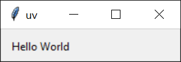

スクリプトの実行
Pythonスクリプトは、python <script>.pyで実行することを意図したファイルです。uvを使用してスクリプトを実行することで、スクリプトの依存関係が手動で環境を管理することなく管理されます。
Note
Python環境に慣れていない場合：すべてのPythonインストールには、パッケージをインストールできる環境があります。通常、各スクリプトに必要なパッケージを分離するために仮想環境を作成することが推奨されます。uvは仮想環境を自動的に管理し、依存関係を宣言的に管理することを好みます。
依存関係のないスクリプトの実行
スクリプトに依存関係がない場合は、uv runを使用して実行できます：
同様に、スクリプトが標準ライブラリのモジュールに依存している場合も、特に追加の手順は必要ありません：
スクリプトに引数を渡すこともできます：
さらに、スクリプトを標準入力から直接読み取ることもできます：
または、シェルがヒアドキュメントをサポートしている場合：
uv runを_プロジェクト_（つまり、pyproject.tomlがあるディレクトリ）で使用する場合、スクリプトを実行する前に現在のプロジェクトをインストールします。スクリプトがプロジェクトに依存していない場合は、--no-projectフラグを使用してこれをスキップします：
プロジェクトでの作業の詳細については、プロジェクトガイドを参照してください。
依存関係のあるスクリプトの実行
スクリプトが他のパッケージを必要とする場合、それらのパッケージはスクリプトが実行される環境にインストールする必要があります。uvはこれらの環境をオンデマンドで作成することを好み、手動で管理する長期的な仮想環境を使用しません。これには、スクリプトに必要な依存関係を明示的に宣言する必要があります。一般的には、依存関係を宣言するためにプロジェクトやインラインメタデータを使用することが推奨されますが、uvは呼び出しごとに依存関係を要求することもサポートしています。
例えば、次のスクリプトはrichを必要とします。
import time
from rich.progress import track
for i in track(range(20), description="For example:"):
time.sleep(0.05)
依存関係を指定せずに実行すると、このスクリプトは失敗します：
$ uv run --no-project example.py
Traceback (most recent call last):
File "/Users/astral/example.py", line 2, in <module>
from rich.progress import track
ModuleNotFoundError: No module named 'rich'
--withオプションを使用して依存関係を要求します：
特定のバージョンが必要な場合は、依存関係に制約を追加できます：
複数の依存関係を要求するには、--withオプションを繰り返します。
uv runが_プロジェクト_で使用される場合、これらの依存関係はプロジェクトの依存関係に追加されます。この動作をオプトアウトするには、--no-projectフラグを使用します。
Pythonスクリプトの作成
Pythonは最近、インラインスクリプトメタデータの標準フォーマットを追加しました。これにより、Pythonバージョンの選択や依存関係の定義が可能になります。uv init --scriptを使用して、インラインメタデータを含むスクリプトを初期化します：
スクリプトの依存関係の宣言
インラインメタデータフォーマットを使用すると、スクリプト自体に依存関係を宣言できます。
uvはインラインスクリプトメタデータの追加と更新をサポートしています。uv add --scriptを使用してスクリプトの依存関係を宣言します：
これにより、依存関係をTOML形式で宣言するscriptセクションがスクリプトの先頭に追加されます：
# /// script
# dependencies = [
# "requests<3",
# "rich",
# ]
# ///
import requests
from rich.pretty import pprint
resp = requests.get("https://peps.python.org/api/peps.json")
data = resp.json()
pprint([(k, v["title"]) for k, v in data.items()][:10])
uvはスクリプトを実行するために必要な依存関係を持つ環境を自動的に作成します。例えば：
$ uv run example.py
[
│ ('1', 'PEP Purpose and Guidelines'),
│ ('2', 'Procedure for Adding New Modules'),
│ ('3', 'Guidelines for Handling Bug Reports'),
│ ('4', 'Deprecation of Standard Modules'),
│ ('5', 'Guidelines for Language Evolution'),
│ ('6', 'Bug Fix Releases'),
│ ('7', 'Style Guide for C Code'),
│ ('8', 'Style Guide for Python Code'),
│ ('9', 'Sample Plaintext PEP Template'),
│ ('10', 'Voting Guidelines')
]
Important
インラインスクリプトメタデータを使用する場合、uv runがプロジェクトで使用される場合でも、プロジェクトの依存関係は無視されます。--no-projectフラグは必要ありません。
uvはPythonバージョンの要件も尊重します：
# /// script
# requires-python = ">=3.12"
# dependencies = []
# ///
# Python 3.12で追加された構文を使用
type Point = tuple[float, float]
print(Point)
Note
dependenciesフィールドは空であっても提供する必要があります。
uv runは必要なPythonバージョンを検索して使用します。Pythonバージョンがインストールされていない場合はダウンロードされます。詳細については、Pythonバージョンに関するドキュメントを参照してください。
再現性の向上
uvは、スクリプトのインラインメタデータのtool.uvセクションでexclude-newerフィールドをサポートしており、特定の日付より後にリリースされたディストリビューションを考慮しないようにuvを制限します。これは、後でスクリプトを実行する際の再現性を向上させるために役立ちます。
日付はRFC 3339タイムスタンプ（例：2006-12-02T02:07:43Z）として指定する必要があります。
# /// script
# dependencies = [
# "requests",
# ]
# [tool.uv]
# exclude-newer = "2023-10-16T00:00:00Z"
# ///
import requests
print(requests.__version__)
異なるPythonバージョンの使用
uvは各スクリプトの呼び出しごとに任意のPythonバージョンを要求することを許可します。例えば：
Pythonバージョンの要求に関する詳細については、Pythonバージョンの要求のドキュメントを参照してください。
GUIスクリプトの使用
Windowsでは、uvは.pyw拡張子で終わるスクリプトをpythonwを使用して実行します：
from tkinter import Tk, ttk
root = Tk()
root.title("uv")
frm = ttk.Frame(root, padding=10)
frm.grid()
ttk.Label(frm, text="Hello World").grid(column=0, row=0)
root.mainloop()

同様に、依存関係がある場合も動作します：
import sys
from PyQt5.QtWidgets import QApplication, QWidget, QLabel, QGridLayout
app = QApplication(sys.argv)
widget = QWidget()
grid = QGridLayout()
text_label = QLabel()
text_label.setText("Hello World!")
grid.addWidget(text_label)
widget.setLayout(grid)
widget.setGeometry(100, 100, 200, 50)
widget.setWindowTitle("uv")
widget.show()
sys.exit(app.exec_())

次のステップ
uv runの詳細については、コマンドリファレンスを参照してください。
または、uvでツールを実行およびインストールする方法を学んでください。